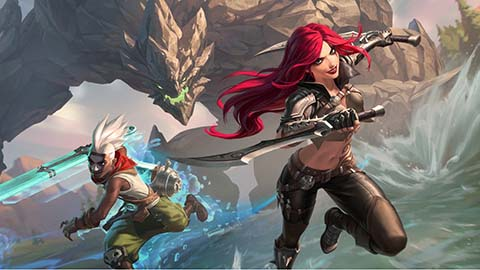
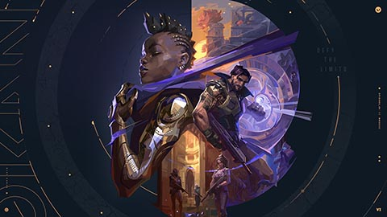
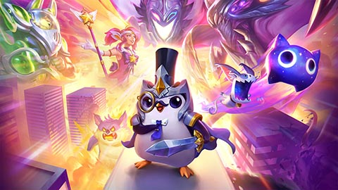
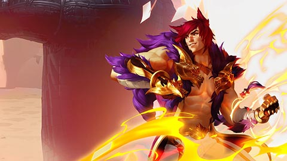
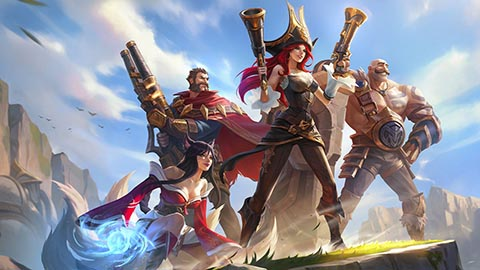
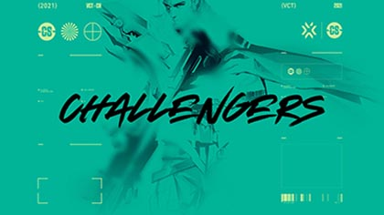
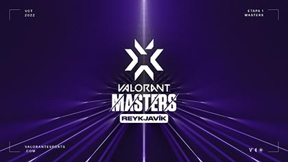
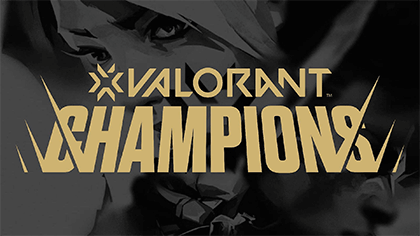

¡Bienvenido Invocador!
Si aún no conoces nuestro nombre, ¡prepárate para descubrir el emocionante mundo de los videojuegos y los deportes electrónicos! somos una empresa líder en la industria de los videojuegos, dedicada a crear experiencias de juego únicas y emocionantes para jugadores de todo el mundo.
Desde nuestro lanzamiento en 2006, hemos sido pioneros en la creación de algunos de los juegos más populares del mundo, como League of Legends y Valorant. Si te gustan los juegos de estrategia y acción, ¡estos son juegos que no te puedes perder! Además, también hemos lanzado otros juegos de éxito, como Teamfight Tactics, Legends of Runeterra y Wild Rift.
Además, Forge da acceso a los desarrolladores a la propiedad intelectual de Riot para que puedan crear juegos como Ruined King y muchas otras aventuras con las que explorar Runeterra. También estamos expandiendo el mundo de Runeterra mediante proyectos multimedia como música, cómics, juegos de mesa y nuestra serie de animación galardonada con premios Emmy, Arcane.
En Riot Games, nuestra misión es crear experiencias de juego emocionantes y memorables para todos los jugadores, independientemente de su nivel de habilidad o experiencia en los juegos. ¡Esperamos que te unas a nosotros y descubras todo lo que Riot Games tiene para ofrecer!
Citado regularmente como uno de los deportes electrónicos más populares del mundo, el juego tiene una escena competitiva internacional que consta de 12 ligas. Estas ligas locales culminan en el Campeonato Mundial anual de League of Legends. El evento de 2019 registró más de 100 millones de espectadores únicos, alcanzando un máximo de 44 millones de espectadores simultáneos durante la final. Los eventos nacionales e internacionales se han transmitido en sitios web de transmisión en vivo como Twitch, YouTube, Bilibili y en el canal de deportes de televisión por cable ESPN.
Juegos
Riot Games es una compañía de videojuegos que se dedica a crear y publicar juegos en línea. Algunos de los juegos más populares de Riot Games incluyen:
-
League of Legends
League of Legends es un juego en equipos de cinco contra cinco. El objetivo del juego es destruir el nexo del equipo enemigo, que es una estructura que se encuentra en la base del equipo enemigo. Los jugadores pueden elegir entre más de 100 campeones diferentes, cada uno con sus propias habilidades únicas. Los jugadores pueden ganar oro matando súbditos enemigos, monstruos neutrales y campeones enemigos. El oro se puede utilizar para comprar objetos que mejoran las habilidades de los campeones.
-
Valorant
Valorant es un juego de disparos en primera persona que se juega en equipos de cinco contra cinco. El objetivo del juego es plantar una bomba en un sitio y protegerla hasta que explote. Los jugadores pueden elegir entre más de 10 agentes diferentes, cada uno con sus propias habilidades únicas. Los jugadores pueden ganar oro matando enemigos, plantando o desactivando la bomba, y completando objetivos. El oro se puede utilizar para comprar armas y habilidades.
-
Teamfight Tactics
TFT es un juego de estrategia en línea todos contra todos. El objetivo del juego es construir un equipo de campeones y luchar contra otros equipos. Los jugadores pueden elegir entre más de 50 campeones diferentes, cada uno con sus propias habilidades. Los jugadores pueden ganar oro matando monstruos neutrales y campeones enemigos. El oro se puede utilizar para comprar objetos que mejoran las habilidades de los campeones.
-
Legends of Runeterra
Legends of Runeterra es un juego de cartas coleccionables en línea. El objetivo del juego es construir un mazo de cartas y luchar contra otros jugadores. Los jugadores pueden elegir diferentes campeones.
-
LOL: Wild Rift
Wild Rift es la version mobile del League of Legends. Forma un equipo con tus amigos y poned a prueba vuestras habilidades en un MOBA de combates 5v5. La competición de alto nivel que andás buscando: diseñada específicamente para móvil y consola, con controles rediseñados y con partidas más simples.
Forge
Somos una distribuidora centrada en los jugadores y desarrolladores.
Forge es una plataforma de distribución de juegos que permite a los desarrolladores publicar sus juegos en línea y llegar a una audiencia más amplia.
- Ruined King - La historia gira en torno a varios personajes de LoL que tendrán que luchar contra una calamidad llamada Harrowing.
- CONVERGENCE - Es un juego de plataformas narrativo en 2D con dinámicos combates y exploración gracias a la habilidad de Ekko para viajar por el espacio-tiempo.
- Song of Nunu - En esta aventura, os adentraréis en el idílico pero traicionero mundo de Freljord como Nunu, un niño enfrascado en la tarea de encontrar a su madre.
- Hextech Mayhem - En este veloz juego de avance rítmico. Juega como Ziggs, el yordle experto en Hexplosivos, ¡mientras arrasas con los vecindarios de Piltóver!
- The MageSeeker - Juega como Sylas, un mago que se liberó después de pasar años en cautiverio. Empuña las cadenas, que en algún momento te retuvieron, para liberar Demacia de la tiranía de los cazadores de magos.
E-Sports
Riot Games también es conocida por su compromiso con los deportes electrónicos (e-sports). La compañía ha organizado varios torneos importantes de e-sports en todo el mundo, y cuenta con una gran cantidad de jugadores profesionales y equipos en sus juegos.
El Campeonato mundial de League of Legends (en inglés, League of Legends World Championship), también conocido como Worlds, es un torneo anual de League of Legends organizado por Riot Games y que supone la culminación de cada temporada. Los equipos compiten por el título de campeón, la Copa del Invocador, y un premio de varios miles de dólares. El torneo ha sido ampliamente elogiado por sus actuaciones ceremoniales, además de recibir una alta atención mediática debido a su naturaleza emocional y dramática. Las finales de 2018 fueron vistas por 99.6 millones de personas, rompiendo el récord de la edición anterior.
Valorant se ha vuelto activo dentro de esports. Riot Games decidió crear el primer torneo llamado "First Strike" para establecer una base para crear una escena de deportes electrónicos con el juego.
En noviembre de 2020, Riot Games anunció la serie de torneos llamada Valorant Champions Tour (VCT), que es una competencia de un año que consta de tres niveles:
- Challengers: torneos regionales que se llevan a cabo en todo el mundo. 
- Masters: torneos internacionales que se llevan a cabo en todo el mundo. 
- Champions: un torneo internacional que se llevará a cabo en diciembre de 2021. 
Los equipos se clasificarán directamente para los Champions a través de los primeros lugares en la Clasificación de Puntos del Circuito de su región, según los resultados de los Challengers y Masters. Los equipos que se encuentren en los puestos intermedios de la Clasificación por Puntos del Circuito tendrán una oportunidad más de clasificarse para Campeones al ganar los Clasificatorios de Última Oportunidad (América del Norte, EMEA, América del Sur, Asia Pacífico).
Valorant Champions 2022 se celebró del 31 de agosto al 18 de septiembre en Estambul.
LOUD derrotó a OpTic Gaming por 3-1 en la final y se convirtió en el segundo campeón mundial de esports "Valorant".
Entretenimiento
En Riot Games, nos enorgullece no solo crear juegos emocionantes y competitivos, sino también ofrecer una amplia variedad de contenido de entretenimiento para nuestros jugadores y fans. Desde cómics hasta música y series animadas, nuestro objetivo es llevar nuestro universo de juegos a la vida de una manera emocionante y accesible.
Aquí en nuestra sección de entretenimientos, encontrarás todo lo que necesitas saber sobre nuestros cómics en expansión, nuestra vibrante escena musical y nuestra serie de animación, Arcane. Además, nos aseguramos de mantenernos actualizados con las últimas noticias sobre nuestros próximos proyectos de entretenimiento.
Cómics: hemos creado varios cómics basados en el mundo de League of Legends. Algunos de ellos incluyen "Zed", "Ashe: Madre de Guerra" y "Lux". Estos cómics están disponibles de forma gratuita en línea y ofrecen una visión más profunda de los personajes y el universo de League of Legends.
Música: Hemos producido una serie de canciones originales inspiradas en los personajes del juego, como "Warriors", "Legends Never Die" y "Rise". También han organizado conciertos en vivo, como el "League of Legends World Championship Finals Opening Ceremony", que presentó una actuación en vivo de Imagine Dragons.
Arcane: Es una serie animada ambientada en el mundo de League of Legends. La serie sigue a dos hermanas, Vi y Jinx, mientras luchan por sobrevivir en las peligrosas calles de Piltover y Zaun. La serie recibió críticas muy positivas, y se espera que se estrene una segunda temporada en el futuro.
Merchandising: Ofrecemos una amplia variedad de productos de merchandising relacionados con League of Legends, como figuras de acción, ropa, accesorios y artículos de colección. Los jugadores y fans pueden comprar estos productos en línea a través de la tienda oficial de Riot o en tiendas minoristas seleccionadas.
Eventos en vivo: Organizamos eventos en vivo, como el "League of Legends World Championship", donde los mejores equipos del mundo compiten por un gran premio en efectivo. Estos eventos suelen atraer a una gran cantidad de fans y se transmiten en vivo en línea para que los jugadores de todo el mundo puedan seguirlos.